Es aquella distribución que indica las frecuencias con que aparecen los datos estadísticos, desde el menor de ellos hasta el mayor de ese conjunto sin que se haya hecho ninguna modificación al tamaño de las unidades originales.
Es aquella distribución en la que la disposición tabular de los datos estadísticos se encuentran ordenados en clases y con la frecuencia de cada clase; es decir, los datos originales de varios valores adyacentes del conjunto se combinan para formar un intervalo de clase.
La agrupación de datos es un proceso importante en el análisis de datos, que implica combinar datos relacionados para obtener una visión general y descubrir patrones, tendencias y relaciones entre ellos.
En estadística, un histograma es una representación gráfica de una variable en forma de barras, donde la superficie de cada barra es proporcional a la frecuencia de los valores representados. En el eje vertical se representan las frecuencias, y en el eje horizontal los valores de las variables, normalmente señalando las marcas de clase, es decir, la mitad del intervalo en el que están agrupados los datos.
El Cálculo de Probabilidades se ocupa de estudiar ciertos experimentos que se denominan aleatorios, cuya característica fundamental es la incertidumbre del resultado, esto significa que es imposible predecir los resultados porque hay más de uno posible.
Son ejemplos de experimentos aleatorios: lanzar un dado cinco veces, los instantes de llegadas a un abarrote, etc.
El término de probabilidad es de uso común, así el ente televisivo, el cual nos dirá que es poco probable un cambio brusco de temperatura ó un periódico informará que es muy probable que el Real Madrid gane en su campo a Las Palmas.
Este tipo de información es insuficiente cuando se necesita un conocimiento más profundo de un fenómeno aleatorio, Supongamos que una compañía de seguros va a extender una póliza por seguro de vida a un cliente.
Definición de Espacio muestral (E): es el conjunto de los diferentes resultados que pueden darse en un experimento aleatorio o cuando se realiza un experimento, que es cualquier proceso que produce un resultado o una observación, se van a obtener un conjunto de valores.
A este conjunto de valores que puede tomar una variable se le denomina espacio muestral.
Por ejemplo: Si se tiene un dado cualquiera, el espacio muestral (EM) es EM={1,2,3,4,5,6}.
Experimento {Lanzar un dado}, E={1,2,3,4,5,6} Experimento {Lanzar una moneda}, E={Cara, Cruz}
Los axiomas de probabilidad son las condiciones mínimas que deben verificarse para que una función definida sobre un conjunto de sucesos determine consistentemente sus probabilidades.
AXIOMA 1 Si A es un evento de S, entonces la probabilidad del evento A es: 0 ≤ P(A) ≤ 1 Como no podemos obtener menos de cero éxitos ni más de n éxitos en n experimentos, la probabilidad de cualquier evento A, se representa mediante un valor que puede variar de 0 a 1.
AXIOMA 2 Si dos eventos son mutuamente excluyentes, la probabilidad de obtener A o B es igual a la probabilidad de obtener A más la probabilidad de obtener B. P(A ∪ B) = P(A) + P(B) Excluirse mutuamente quiere decir que A y B no pueden ocurrir simultáneamente en el mismo experimento. Así, la probabilidad de obtener águila o sol en la misma tirada de una moneda será P(A ∪ B) = P(A) + P(B) P(A ∪ B) = 1/2 + 1/2 = 1. En general podemos decir que la suma de las probabilidades de todos los posibles eventos mutuamente excluyentes es igual a 1: P(A1) + P(A2) + P(A3) + ... + P(An) = 1
AXIOMA 3 Si A es un evento cualquiera de un experimento aleatorio y A’ es el complemento de A, entonces: P(A’) = 1 - P(A) Es decir, la probabilidad de que el evento A no ocurra, es igual a 1 menos la probabilidad de que ocurra.
Eventos Independientes
Dos o más eventos son independientes cuando la ocurrencia o no-ocurrencia de un evento no tiene efecto sobre la probabilidad de ocurrencia del otro evento (o eventos). Un caso típico de eventos independiente es el muestreo con reposición, es decir, una vez tomada la muestra se regresa de nuevo a la población donde se obtuvo.
Eventos dependientes
Dos o más eventos serán dependientes cuando la ocurrencia o no-ocurrencia de uno de ellos afecta la probabilidad de ocurrencia del otro (o otros). Cuando tenemos este caso, empleamos entonces, el concepto de probabilidad condicional para denominar la probabilidad del evento relacionado. La expresión P (A|B) indica la probabilidad de ocurrencia del evento A sí el evento B ya ocurrió.
Al multiplicar la formula P(B/A) =P( A Ç B)/ P(A) por P( A); obtenemos la siguiente regla multiplicativa, esta es importante por que nos permite calcular la probabilidad de que ocurran dos eventos.
Teorema: si un experimento pueden ocurrir los eventos A y B, entonces P( A Ç B)= P( A) P(B/A). así la probabilidad de que ocurran A y B es igual a la probabilidad de que ocurra A multiplicada por la probabilidad de que ocurra B, dado que ocurre A.
Sea d un espacio muestral que está formado por los eventos A1, A2, A3,.....,An mutuamente excluyentes, luego, d = A1ÈA2ÈA3È.....ÈAn
Luego si ocurre un evento B definido en d, observamos que;
B = dÇB = (A1ÈA2ÈA3È.....ÈAn)ÇB = (A1ÇB)È(A2ÇB)È(A3ÇB)È.....È(AnÇB)
Donde cada uno de los eventos AiÇB son eventos mutuamente excluyentes, por lo que
p(B) = p(A1ÇB) + p(A2ÇB) + p(A3ÇB) +......+ p(AnÇB)
y como la p(AiÇB) = p(Ai)p(B½Ai) , o sea que la probabilidad de que ocurra el evento Ai y el evento B es igual al teorema de la multiplicación para probabilidad condicional, luego;
p(B) = p(A1)p(B½A1) + p(A2)p(B½A2) + p(A3)p(B½A3) + p(An)p(B½An)
Una variable aleatoria es una función que asigna un valor numérico, al resultado de un experimento aleatorio. Recordemos que el resultado de un experimento aleatorio depende del azar.
Video de variables aleatorias discretasUna variable aleatoria discreta es aquella que solo puede tomar un conjunto finito o contable de valores. Por ejemplo, el número de caras que salen al lanzar una moneda, el número de defectos en una producción industrial o el número de clientes que llegan a una tienda en una hora.
La distribución de probabilidad de una variable aleatoria discreta X se define como la función que asigna a cada valor posible de X su probabilidad correspondiente.
El valor esperado, también conocido como media poblacional, de una variable aleatoria discreta X se define como la suma de los productos de cada valor posible de X por su probabilidad correspondiente.
La varianza de una variable aleatoria discreta X mide la dispersión de sus valores alrededor del valor esperado. Se define como la suma de los cuadrados de las desviaciones de cada valor posible de X respecto al valor esperado, multiplicadas por sus probabilidades correspondientes.
La función acumulada de una variable aleatoria discreta X representa la probabilidad de que X tome un valor menor o igual a un determinado valor x
Video de variables aleatorias continuasUna variable aleatoria continua es aquella que puede tomar cualquier valor (al menos teóricamente) entre dos valores fijados. Los valores de la variable (al menos teóricamente) no se repiten.
Una variable aleatoria continua es aquella que puede tomar un conjunto infinito y no numerable de valores dentro de un intervalo determinado. Por ejemplo, la altura de una persona, el tiempo de espera en una fila o la temperatura ambiente.
El valor esperado de una variable aleatoria continua X se define como el límite de la suma de los productos de cada valor posible de X por su probabilidad correspondiente, a medida que el ancho de los intervalos considerados tiende a cero.
La varianza y la desviación estándar de una variable aleatoria continua se calculan de forma similar al caso de las variables discretas, pero utilizando integrales en lugar de sumas.
La función acumulada de una variable aleatoria continua X (F(x)) representa la probabilidad de que X tome un valor menor o igual a un determinado valor x.
Una de las principales diferencias entre variables discretas y continuas radica en el cálculo de probabilidades. En el caso de variables continuas, como la probabilidad de que X tome un valor exacto es cero, se suelen calcular las probabilidades de que X se encuentre dentro de un intervalo determinado.
Haz clic aquí para ir a los ejercicios del tema 3En el ámbito de la teoría de la probabilidad, la función de probabilidad juega un papel crucial. Esta función se define como una representación matemática que asigna a cada posible resultado de un experimento aleatorio la probabilidad de que dicho resultado ocurra. La suma de las probabilidades asignadas a todos los resultados posibles debe ser igual a 1.
La distribución binomial se emplea para modelar situaciones donde se realizan "n" experimentos aleatorios independientes, cada uno con la misma probabilidad de éxito "p". Esta distribución describe la probabilidad de obtener "x" éxitos en esos "n" experimentos. Se utiliza comúnmente en escenarios como lanzar una moneda, realizar pruebas de diagnóstico o analizar resultados electorales.
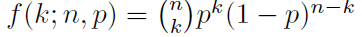Su formula de la media es: 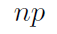
Su formula de la varianza es: 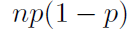
La distribución hipergeométrica se aplica en situaciones donde se extrae una muestra sin reposición de un conjunto finito que contiene elementos de dos categorías (éxito y fracaso). Esta distribución calcula la probabilidad de obtener "x" resultados de una categoría específica ("éxito") en esa muestra de tamaño "n". Se utiliza en escenarios como la selección de un comité o la auditoría de lotes de productos.
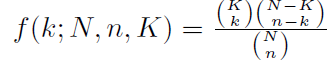Su formula de la media es: 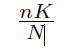
Su formula de la varianza es: 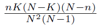
La distribución de Poisson se utiliza para modelar la cantidad de eventos que ocurren en un intervalo de tiempo o espacio determinado, suponiendo que la tasa de ocurrencia es constante y los eventos son independientes entre sí. Esta distribución es útil en situaciones como el número de llamadas telefónicas recibidas en un centro de atención al cliente o la cantidad de defectos en una hoja de metal.
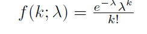Su formula de la media es: 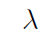
Su formula de la varianza es:
La distribución normal, también conocida como distribución de Gauss, es una de las distribuciones de probabilidad más importantes en estadística. Se caracteriza por su forma de campana simétrica, donde la mayoría de los datos se agrupan alrededor de la media y la probabilidad de valores extremos disminuye a medida que se alejan de ella. Esta distribución se aplica en una amplia gama de escenarios, desde mediciones físicas hasta análisis financieros.
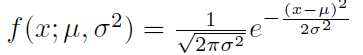Su formula de la media es: 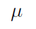
Su formula de la varianza es: 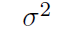
La distribución T-student se utiliza en lugar de la distribución normal cuando el tamaño de la muestra es pequeño y la población presenta una varianza desconocida. Esta distribución es más robusta que la normal ante la presencia de valores atípicos (outliers) y se emplea en pruebas de hipótesis e intervalos de confianza.
La distribución Chi cuadrada se utiliza para evaluar la independencia entre dos variables categóricas o para analizar la varianza de una muestra en comparación con la varianza de una población conocida. Esta distribución se aplica en pruebas de hipótesis, como la prueba de Chi cuadrado de independencia o la prueba de Chi cuadrado de bondad de ajuste.
La distribución F se utiliza para comparar la varianza de dos muestras independientes. Esta distribución es útil en pruebas de hipótesis, como la prueba F de Snedecor, para determinar si existe una diferencia significativa en la varianza entre dos grupos.
Ejercicio 7 explicaciónEl diagrama de dispersión es una representación gráfica de la relación entre dos variables. Se utiliza para visualizar la correlación entre las variables y para identificar patrones en los datos.
La regresión lineal simple es un modelo estadístico que describe la relación lineal entre dos variables. Se utiliza para predecir el valor de una variable (variable dependiente) en función del valor de la otra variable (variable independiente).
La correlación es una medida de la asociación entre dos variables. Indica si las variables se mueven en la misma dirección, en direcciones opuestas o si no están relacionadas.
El coeficiente de correlación (r) es una medida de la fuerza de la correlación entre dos variables. El coeficiente de determinación (R²) es una medida de la proporción de la varianza de la variable dependiente que se puede explicar por la variable independiente.
La distribución normal bidimensional es una distribución de probabilidad conjunta de dos variables continuas. Se utiliza para modelar la relación entre dos variables que se distribuyen normalmente.
Los intervalos de confianza y las pruebas de hipótesis se utilizan para inferir sobre la población a partir de una muestra. En el caso de la correlación, se pueden utilizar para estimar el valor real de la correlación en la población y para determinar si la correlación es estadísticamente significativa.